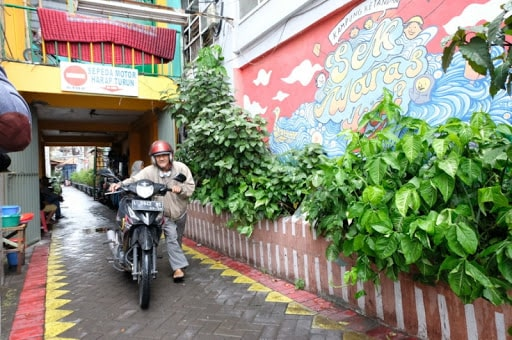

A little about Surabaya
Surabaya is like a bottle of wine: it gets better the more you get to know it. Give it time and you'll discover that Surabaya has many quixotic corners of interest. Its historic Arab Quarter is a fascinating labyrinth of lanes, and the city has one of Indonesia’s biggest Chinatowns and some impressive, though disintegrating, Dutch buildings.
Top 5 Reasons to Visit Surabaya
1. It's a Multicultural Metropolis
Surabaya has an incredible mixture of neighborhoods. There's the elegant old Dutch colonial center, the Arab Quarter where you'll find the stately Masjid Ampel, and a bustling Chinatown too.
2. Take in Some Traditional Javanese Theater
Java is famous for its slapstick puppet shows, and there's no better place to catch a performance than the theater in Surabaya's Taman Remaja park.
3. Intriguing Markets to Explore
The markets of Surabaya are full of energy and a little mystery too. Buy gorgeous porcelain items at Pasar Pabean or fill up on satisfying street food at Pasar Genteng.
4. Beautiful Scenery Is Not Far Away
A few miles outside Surabaya, you'll come to some gorgeous scenery. Tretes is a great example, with its numerous waterfalls and hillside views (as well as its string of lively bars).
5. The Old Colonial City
Surabaya was one of the key centers of the Dutch East Indies. Tour elegant 19th-century buildings like the House of Sampoerna or the Governor's Residence to step back into another era.
What to do in Surabaya

1. History Not Forgotten
The Heroes Monument is the main symbol of the city and is dedicated to those who lost their lives in the Battle of Surabaya in November 1945. This battle was a symbol of Indonesian resistance against British troops. The monument stands 41.15 meters tall and construction began in 1951, but the monument isn't all that represents the battle. There are also two floors with exhibitions about the Surabayan people, their struggle for independence and the details of the battle itself. This is history you may not have learned in history books and it's fascinating to read the point of view of the other side.
2. A Peak In The Sea Of Sand
The fact that Indonesia has many active volcanoes is pretty well-known, but the great thing is some of them offer some incredibly spectacular views - if you aren't afraid to get too close! Obviously, never be reckless. If a volcano is usually safe to visit but has some activity, just stay behind and try again next time. Mount Bromo peak is 2,329 meters high, and although it isn't the tallest peak of the range, it's definitely the most well-known because of its spectacular beauty. Its last eruption was 2016, but if you can visit, it offers a stunning volcanic view. Towering out of the sky in what they call 'The Sea of Sand.'
3. Through The Smoke
Easily one of the most unique and fascinating sites in Surabaya is the tour you can take of House of Sampoerna, the most famous cigarette manufacturer. Tours last 30 minutes and you can learn about the history of the company, before it changed hands, and see some of the incredible workers who can churn out up to 4,000 cigarettes a day. It's not all about cigarettes, though, if you aren't a fan of tobacco. You'll also find an impressive collection of items like cigarette lighters and even Ming dynasty china and a Heidelberg printing press.
4. A Fish Out Of Water
This is actually a Russian submarine that was used by the Indonesian Navy until 1990, when it was decommissioned. However, rather than doing away with it, using it for parts or letting it sit in storage, they've turned it into a museum where you can now learn about its history, the Indonesian Navy and even a bit about the city itself.
5. As Far As The Eye Can See
This is the longest bridge in South East Asia, and when you see it there's no doubt in your mind that's the case. This winding and never-ending work of art is around 5 kilometers long and although it's only been open since 2009, it sees plenty of travelers each day. If you plan to drive over it you must have nerves of steel and also some change because there are tolls.
How to Get to Surabaya
Plane
Juanda International Airport (SUB) offers plenty of regional connections. From there, expect taxis to cost around Rp130,000 or take the DAMRI airport bus for Rp20,000.
Train
Trains run from Jakarta and Bandung, and most services stop at Pasar Turi Station, near the heart of town. Expect tickets from the capital to cost around Rp260,000.
Car
Highway 1 runs all the way from Jakarta to Surabaya (although it's a long haul). From Malang, take Highway 23, then Highway 1 into town.
Bus
Plenty of intercity buses run into Surabaya every day, and most stop at Bungurasih (around six miles south of the city center).
Where to stay in Surabaya
Pabean Cantian
Pabean Cantian - taking in most of northern Surabaya, Pabean Cantian includes the old Dutch city, as well as the fascinating Arab and Chinese neighborhoods.
Genteng
encompassing much of the modern city center, Genteng is busy and commercial. It also hosts most of the best hotels, along with restaurants like Bima and Indigo Bar and Restaurant.
Gayungan
a lively southern suburb, Gayungan is most famous for the Suroboyo Carnival Park - a huge entertainment complex.
Gallery of Surabaya
2 / 10
Late Night Scenery
3 / 10
Surabaya City Hall
7 / 10
Surabaya Mayor's Office
8 / 10
Surabaya's Orange Force
10 / 10
Surabaya's Suro & Boyo
❮
❯